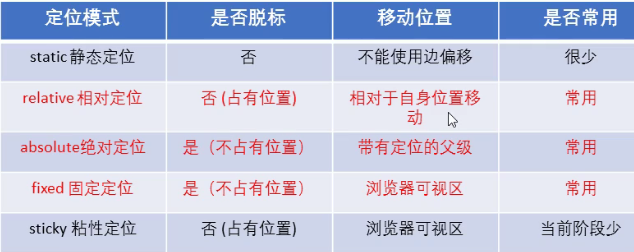
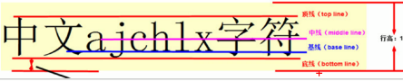

<!-- 布局就是用css来摆放盒子，把每个盒子摆放到相应的位置
css提供了3种传统布局方式（就是盒子如何进行排列)
1.普通流（标准流/文档流）：按照标签自带的默认排列方式排列，多个块级元素纵向排列用标准流。
2.浮动：主要作用：实现多个块级元素横向排列用浮动，盒子之间紧挨着，没有空隙。
    改变元素类型也能实现横向排列，但那种自带有缝隙。
    浮动的特性：1.浮动元素会脱标（脱离标准流）（脱离标准流的控制(浮)移动到指定的位置(动)。
               2.浮动的盒子不再保留原先的位置，后面的标准流会自动占有浮动盒子原先的位子，会产生重叠效果。
               3.浮动的元素会一行内显示，并且都是顶部对齐的，如果父元素装不下多个浮动盒子，一行放不下时，浮动元素只参考它的上一个元素换行排列。
               4.浮动元素具有行内块元素的特性，所有标签加浮动后都可以实现此特性。（排在一行，可以设置宽高等等。。。）
               5.浮动的盒子只会影响它后面一个标准流，而不会影响它前面一个标准流

               6.父盒子很多情况下不方便给高度，没设置高度的父盒子有这种现象：子盒子不浮动时子盒子有多高，父盒子就会被撑大变成一样高，但子盒子设置浮动后不占位置，此时父盒子高度也会变为0，下面的标准流盒子本应正确在下一行显示，但因这个父盒子高度为0 ，下面的标准流盒子就会自动填补上来，影响布局，所以要清除浮动。

               清除浮动方案：
               clear属性只对块元素有效。
               1.用clear：both;清除浮动。谁不想被影响就给谁写清除，这样0高度的父盒子高度又恢复了，子盒子多高，父盒子就被撑多高了，适用上下排列的元素。

               2.给父元素写overflow:hidden;清除浮动，缺点是溢出的部分不显示

               3.给父级写after伪元素清除浮动（类似于额外标签法的升级版，也是在浮动的后面加一个标签来实现的，after伪元素一般写在css代码最上面，起个类名叫clearfix，后面谁需要清除，父元素可以直接调用类名就行了，适用嵌套的元素。
               after伪元素写法：.clearfix:after（后面的意思） {
                                    content: "";
                                    display: block; (因为默认添加行内元素，所以要转换类型)
                                    height: 0;
                                    clear: both;
                                    visibility: hidden;
                                 }
                                 clearfix {
                                     *zoom: 1; （这是为了让低版本IE6、7浏览器支持after）
                                 }

               4.双伪元素清除浮动，使用方法和上面一个一样，也是给父级写，给浮动元素前后都添加一个标签来堵着，写法：
                                 .clearfix:before(前面的意思),.clearfix:after {
                                     content: "";
                                     display: table; (转换成表格类型)
                                 }
                                 .clearfix:after {
                                     clear:both;
                                 }
                                 .clearfix {
                                     *zoom:1;
                                 }

               5.额外标签法（隔墙法），给最后一个浮动的子元素后面添加一个块级元素类型的空标签拦一下。

    网页布局策略：为了约束浮动元素的位置，一般都是先用标准流的父元素控制排列上下的位置，内部的子元素采取浮动来排列左右的位置。

    导航栏制作：实际开发中，链接不直接写a标签，标准做法：用ul列表的li标签包裹。
               导航栏盒子尽量不给宽度，以便后期继续添加内容，内容会撑开盒子；每个a链接之间给左右padding值撑开距离。

    一个ul里有很多li时，一行排几个，可能内容多能排很多行，又必需每个li之间要设置外边距隔开空隙，那就会出现父盒子的宽装不下每个都设置了外边距的li盒子，这种情况建议给li的父盒子ul设置大点的宽度，能刚好装下设有外边距的一排几个盒子，反正li盒子多出来的外边距在网页上看不见。
    不建议给每行的第一个li或最后一个li取消外边距值，如果几十行，一个个写起来不太现实。    
    
    
3.定位（position）：主要作用：让盒子自由的在某个盒子内移动位置或者固定在屏幕中某个位置，并且可以压住其它标准流盒子，包括标准流盒子里的文字、图片等所有内容都会压住，和浮动的文字环绕效果完全不一样。
        行内元素设置定位属性后，可以直接设置宽高等属性。
        块级元素设置定位属性后，宽高默认是内容的宽高。原来没有设置时宽高默认占一行高，宽占满整个屏幕。
        脱标的盒子都不会触发外边距合并的问题。                        

静态定位(static)：什么作用都没有，不能使用边偏移属性，基本不用，是定位属性的默认值，给元素加了它元素还是只有标准流的属性。

相对定位(relative)：以自己原先的位置为参考坐标，并保留原先的位置，不脱标。

绝对定位(absolute)：以最近一级的有定位的元素为参考坐标，如果到最大的html标签都没有设置定位，就以网页为参考坐标，不保留自己原先的位置，脱标。（子绝父相：子元素绝对定位（不占位置）不影响父元素内的其他兄弟元素，父元素相对定位（占原来的位置）不会让父元素下面的标准流元素往上跑，乱了页面布局。

固定定位(fixed)：以浏览器的可视窗口为参照坐标（跟父元素没有任何关系），不随着滚动条的滚动而动，不占原先的位置，脱标。

粘性定位(sticky)：以浏览器的可视窗口为参照坐标（这是固定定位的部分特点），占有原先的位置（这是相对定位的特点），不脱标，必需设置一个边偏移属性粘性定位才有效。所以粘性定位可以看作固定定位和相对定位的混合，它会随着滚动条的滚动而动，但动到一定位置就会停下来固定住。兼容性差，目前IE不支持，较少用。

        定位的叠放次序：z-index来控制盒子的前后次序（z是z轴,三维坐标，z是屏幕朝脸的这一条坐标），这是定位专有属性，其它的都不可以用（就是只有设置定位属性的盒子才有z-index属性用）。  
        使用布局定位时，可能会出现定位到相同的位置，盒子重叠的情况，此时用z-index属性的值来决定哪个盒子在上层，哪个在底下被盖住，属性值不能带单位（px),值可以是正整数、负整数或0，默认值是auto，值越大，盒子越在上层，如果值相同，则按照盒子的书写顺序，后来居上。 
        嵌套情况下：父盒子和子盒子都有z-index属性，父低子高，去和父同级别的盒子进行比较，此时子的层级设置的再高都不起作用，如果父盒子没有设置层级，子盒子的层级才会生效去和父的同级别盒子比较。   
        
display属性：有很多属性值。
         1.转换元素类型的值有三种：inline(行内元素)、inline-block(行内块元素)、block(块级元素)。
         2.隐藏元素和显示元素的值有两种：none(隐藏元素),元素被隐藏后不保留原来位置
           block(显示元素，block值有两种作用。)
        
visibility（可见性）属性：
    常用值：
        inherit(继承上一个父对象的可见性，父元素可见，它就可见，父元素不可见，它就不可见)、visible(对象可视)、hidden（对象隐藏）这里隐藏了会保留对象的原来位置，和display的none不一样。
        collapse（主要用来隐藏表格的行或列的，隐藏的行或列能被其它内容使用。对于表格外的其它对象，其作用等同于hidden。

overflow（溢出）属性：visible(显示内容，是默认值，不用设置)、hidden（隐藏，超出盒子大小的部分隐藏不显示）、scroll（显示滚动条，溢出或不溢出都有滚动条）、auto（自动，溢出就会显示滚动条，不溢出就没有滚动条）
        让溢出的文字显示省略号,元素必需要有固定的宽度，两种：
            1.单行显示省略号：
            white-space:nowrap（不换行）；（默认normal自动换行）   
            overflow:hidden;(超出的部分隐藏)
            text-overflow:ellipsis（省略号）;(文字超出的部分用省略号代替)   
            
            2.多行文本溢出显示省略号：不常用，兼容性差，IE不支持.
            overflow:hidden;
            text-overflow:ellipsis;
            display: -webkit-box;(转换成弹性伸缩盒子模型)
            -webkit-line-clamp:2;(设置在第几行显示省略号)
            -webkit-box-orient:vertical;（设置里面的子元素垂直居中）


vertical(垂直的)-align(对齐)属性：baseline(默认值，图片和文字基线对齐)、middle（让图片和文字居中对齐 ）、top（让图片和文字顶端对齐）、bottom(让图片和文字底端对齐)。

该属性常用于设置图片或表单和文字垂直对齐的。但只对行内元素或行内块元素有效。
    所有的图片和父盒子底部都有一条缝隙，原因是因为行内元素和行内块元素都是默认基线对齐的特性，去掉底部缝隙有两种方法：
        1.用vertical-align属性，除了默认值baseline不能用，其它值都可以去除底部缝隙。（推荐使用第一种方法）
        2.把图片转换成块级元素，块级元素没有基线对齐的特性。                        

-->


我要和这图垂直居中对齐